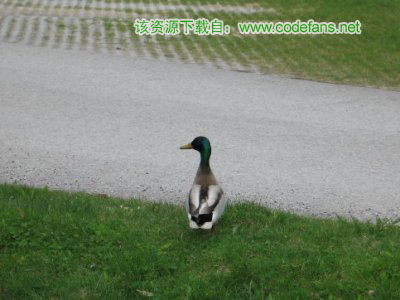

imgAreaSelect Home
imgAreaSelect Examples
- Simple Usage
- Callback Functions
- Advanced Usage
Simple Usage Examples
Width and Height Limits
The minWidth, minHeight, maxWidth and
maxHeight options allow you to place limits on the size of the
selection area. In this example, the maximum size of the
area is 200x150 pixels.
$(document).ready(function () { $('#ladybug_ant').imgAreaSelect({ maxWidth: 200, maxHeight: 150, handles: true }); });
Fixed Aspect Ratio
To make the selection area keep exact proportions, use the aspectRatio
option. Here it is set to "4:3".
$(document).ready(function () { $('#bee').imgAreaSelect({ aspectRatio: '4:6', handles: true }); });
Setting Initial Selection
Use the x1, y1, x2, and
y2 options to set the initial selection area.
$(document).ready(function () { $('#duck').imgAreaSelect({ x1: 120, y1: 90, x2: 280, y2: 210 }); });
